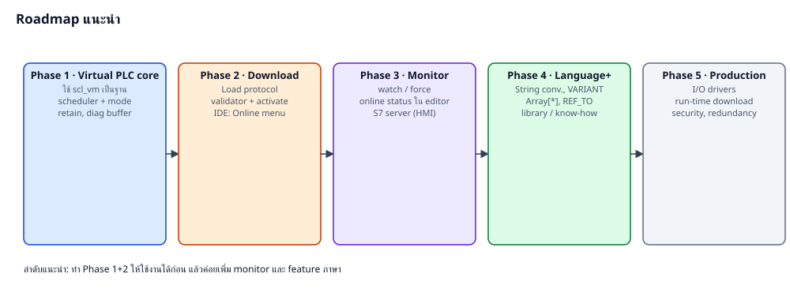

| ความเสี่ยง | ผลกระทบ | การลด |
|---|---|---|
| พฤติกรรมต่างจาก S7 จริง (rounding, overflow, timer edge) | โปรแกรมทำงานต่างกัน | golden test กับ PLCSIM |
| Feature ภาษาที่ยังไม่รองรับ | import โปรแกรมเดิมไม่ได้ | จัดลำดับตามโปรแกรมจริงที่ใช้ |
| Download ทำ image เสีย | เครื่องหยุด | validator + atomic swap + เก็บ image เดิม |
| Retain หาย | ค่าตั้งหาย | retain.bin + CRC + layout hash |
| Network ไม่ปลอดภัย | มีคนแก้โปรแกรม | password, session lock, จำกัด IP |
| Phase | งาน | ผลลัพธ์ |
|---|---|---|
| 1 | Virtual PLC core: host, mode, scheduler, retain, diag, UI พื้นฐาน, I/O simulation | รัน .svpl ได้เอง |
| 2 | Load protocol + validator + IDE Online menu + Download dialog | กด Download จาก SCL Studio ได้ |
| 3 | Watch/force, online status ใน editor, S7 server (Snap7) ให้ HMI | debug online, ใช้ HMI เดิม |
| 4 | String conversion, VARIANT/Array[*], library, know-how protection | รองรับโปรแกรมได้กว้างขึ้น |
| 5 | I/O driver จริง, run-time download, redundancy, security | ใช้งานจริง |